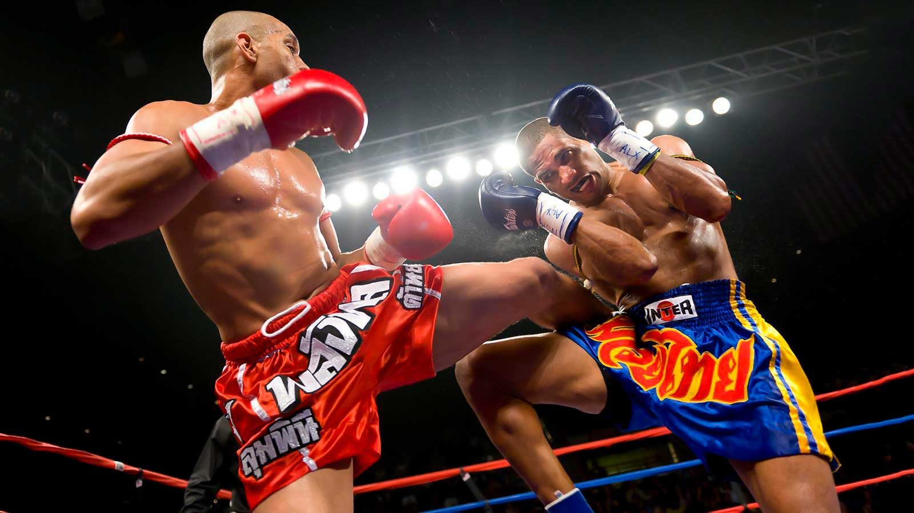

A história do Kickboxing

Golpes
Clique aqui para ver uma combinação utilizando os golpes.
Como qualquer arte marcial/atividade física pode ajudar em sua vida pessoal
Boxe, muay thai, kung fu, jiu jitsu, judô. Independente da modalidade de artes marciais,
elas podem proporcionar muitos benefícios a sua saúde, como te ajudar a ficar em forma,
aliviar o estresse e ainda contribuir para sua coordenação motora.
Apesar de parecerem atividades de contato brutas, sua execução na academia é feita com
professores com bastante conhecimento da técnica e que costumam explorar os objetivos e limites
de cada aluno.
- Aumenta a flexibilidade do corpo;
- Desenvolve a coordenação motora;
- Fortalece grupos musculares ao mesmo tempo. Diferente da musculação que trabalha isoladamente os músculos;
- Promove um grande alívio de stress e uma excelente forma de descontar a raiva, frustração e demais sentimentos ruins;
- Melhora a agilidade e aguça os sentidos, já que a pessoa aprende a estar sempre alerta e a ter reflexos mais rápidos;
- Ensina a ter mais autocontrole e desenvolve a autoestima. Já que a pessoa adquire um poder (o de saber se defender e como usar a força) sobre os outros e se torna mais responsável por isso;
- É uma excelente forma de perder peso, além de desenvolver a musculatura. A maioria das modalidades trabalha o abdômen e a lombar. Além de músculos superiores e inferiores em maior ou menorintensidade;
- Desenvolve a disciplina. Cada modalidade tem seu conjunto de regras de conduta que são ensinados e reforçados pelo professor ou mestre. A disciplina também é reforçada no sentido do aluno
ser estimulado a não perder o treino, já que ele fica em desvantagem em comparação aos outros que são mais assíduos;
- Ressalta a importância do aluno se alimentar e dormir melhor. Já que ele percebe na aula que seu desempenho melhorou ou piorou devido ao que consumiu. O aluno se torna mais consciente e
tende a conter os excessos pensando em não prejudicar o seu desempenho, principalmente porque ele terá um oponente que pode estar em melhores condições que ele.
- Pode contribuir para a melhoria de problemas de saúde como pressão alta, controle do colesterol , gastrite e etc. Porém, deve-se fazer uma consulta ao médico antes de iniciar a prática.
E é fundamental explicar ao professor quais são os problemas preexistentes, já que o treino deverá ser diferente quanto a intensidade e tipos de movimentos.
- Pode ser praticado por pessoas de todas as idades, tanto homens como mulheres. Em sala de aula costuma-se separar os praticantes em 3 tipos:
a) Aqueles que praticam apenas para manter a forma física
b) Aqueles que pretendem ser atletas
c) Os que desejam ser professores